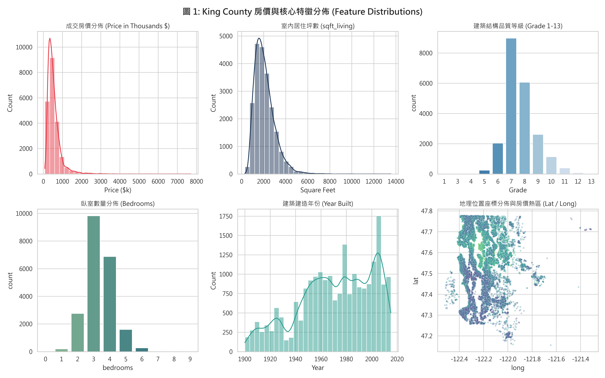
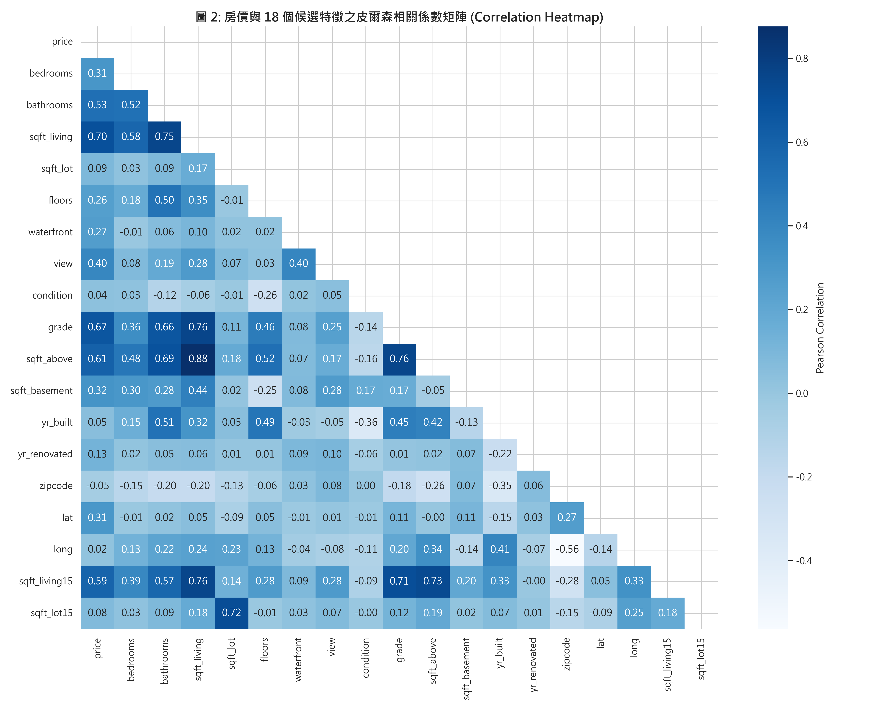
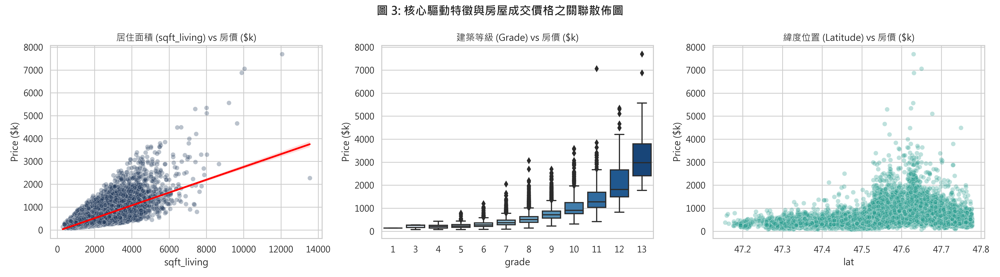
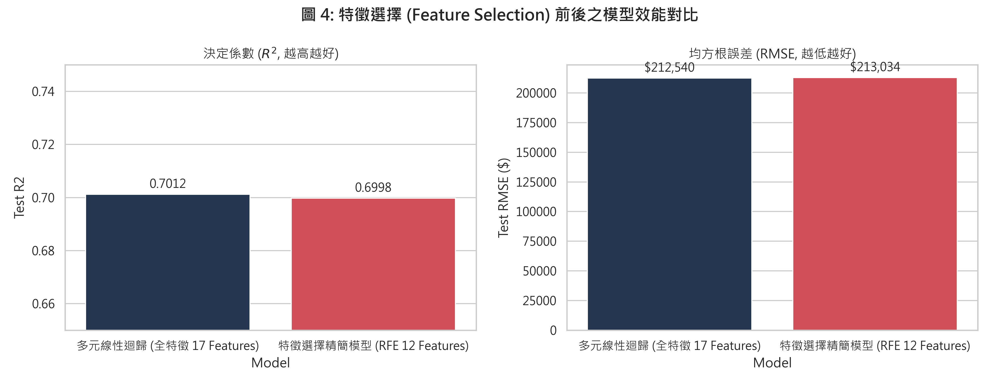
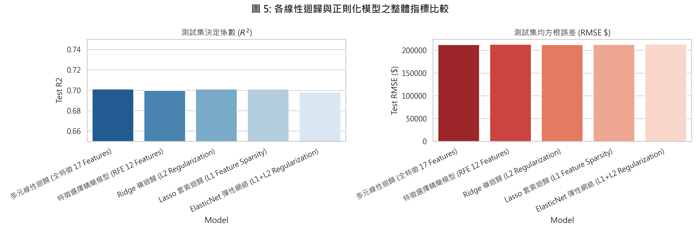
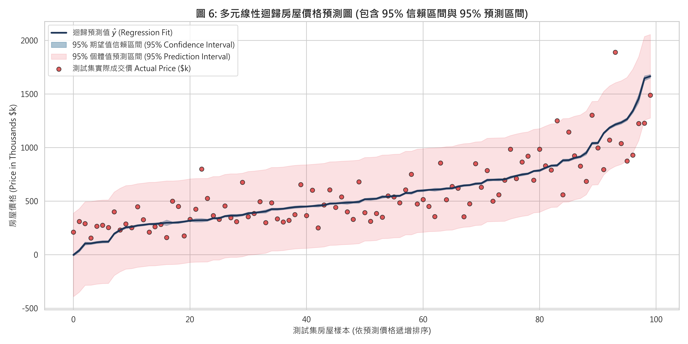
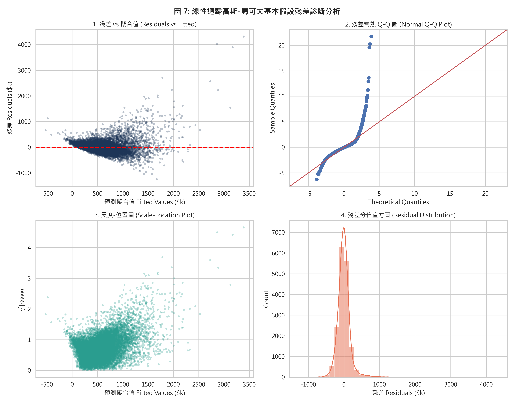
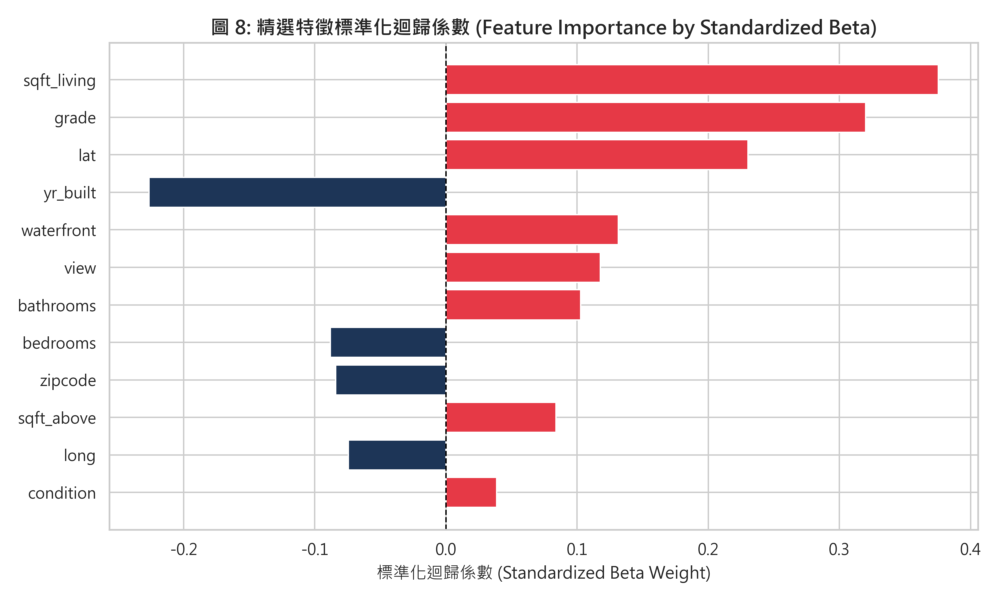

kc_house_data.csv)在房地產市場交易中，房屋公允市場價格 (Fair Market Value) 的精準定價是房仲業、購屋者、房地產投資人及銀行抵押貸款核貸部門的關鍵核心。
本專案旨在透過華盛頓州 King County（包含西雅圖市）的實價登錄資料，建立一套高精準度且具備可解釋性的多元線性迴歸模型，並提供 95% 信賴區間 (Confidence Interval) 與 95% 預測區間 (Prediction Interval)，量化不同物理屬性、建築結構與地理區位對房價的邊際貢獻。
多元線性迴歸假設目標變數 $y$ 與 $p$ 個自變數 $x_1, x_2, \dots, x_p$ 之間存在線性加法關係：
$$y_i = \beta_0 + \beta_1 x_{i1} + \beta_2 x_{i2} + \cdots + \beta_p x_{ip} + \varepsilon_i, \quad i = 1, 2, \dots, n$$
以矩陣形式表示：
$$\mathbf{y} = \mathbf{X} \boldsymbol{\beta} + \boldsymbol{\varepsilon}$$
其中：
最小平方法 (Ordinary Least Squares, OLS) 求解目標為最小化殘差平方和 (Residual Sum of Squares, RSS)：
$$\hat{\boldsymbol{\beta}} = \arg\min_{\boldsymbol{\beta}} \sum_{i=1}^n (y_i - \mathbf{x}_i^T \boldsymbol{\beta})^2 = (\mathbf{X}^T \mathbf{X})^{-1} \mathbf{X}^T \mathbf{y}$$
https://www.kaggle.com/datasets/harlfoxem/housesalespredictionid（無預測價值）。date（無時間序列遞延特徵時不直接入模）。price。| 特徵名稱 | 資料型態 | 變數性質 | 商業定義與衡量單位 | 取值範圍 / 單位 |
|---|---|---|---|---|
bedrooms |
數值 (int64) | 離散 | 臥室房間數量 | 0 ~ 33 間 |
bathrooms |
數值 (float64) | 連續 | 衛浴數量 (含半套/全套) | 0 ~ 8 間 |
sqft_living |
數值 (int64) | 連續 | 室內居住坪數 | 290 ~ 13,540 平方英尺 |
sqft_lot |
數值 (int64) | 連續 | 基地土地佔地坪數 | 520 ~ 1,651,359 平方英尺 |
floors |
數值 (float64) | 離散 | 建築總樓層數 | 1 ~ 3.5 樓 |
waterfront |
數值 (int64) | 二元虛擬 | 是否臨水岸景觀 (0: 否, 1: 是) | 0 或 1 |
view |
數值 (int64) | 序數 | 視野景觀評級 | 0 ~ 4 等級 |
condition |
數值 (int64) | 序數 | 房屋現況保養程度 | 1 ~ 5 等級 |
grade |
數值 (int64) | 序數 | 建築設計與材料結構官方品質等級 | 1 ~ 13 等級 |
sqft_above |
數值 (int64) | 連續 | 地面以上室內生活坪數 | 290 ~ 9,410 平方英尺 |
sqft_basement |
數值 (int64) | 連續 | 地下室空間坪數 | 0 ~ 4,820 平方英尺 |
yr_built |
數值 (int64) | 離散 | 原始建造完工年份 | 1900 ~ 2015 年 |
yr_renovated |
數值 (int64) | 離散 | 最近一次翻修年份 (0 代表未曾翻修) | 0 或 1934 ~ 2015 年 |
zipcode |
數值 (int64) | 類別 | 郵遞區號 (代表微型行政區) | 98001 ~ 98199 |
lat |
數值 (float64) | 連續 | 地理緯度 (衡量向北接近西雅圖核心區程度) | 47.1559 ~ 47.7776 |
long |
數值 (float64) | 連續 | 地理經度 | -122.519 ~ -121.315 |
sqft_living15 |
數值 (int64) | 連續 | 2015 年臨近 15 戶鄰舍之平均居住坪數 | 399 ~ 6,210 平方英尺 |
sqft_lot15 |
數值 (int64) | 連續 | 2015 年臨近 15 戶鄰舍之平均土地坪數 | 651 ~ 871,200 平方英尺 |
price |
數值 (float64) | 目標變數 | 房屋實際成交價格 (Target) | $75,000 ~ $7,700,000 (均值: $540,088) |

price 呈高度右偏分佈 (Right-Skewed)，均值為 $540,088，中位數為 $450,000，少數極端豪宅拉高了整體平均值。sqft_living 主要集中在 1,500 ~ 2,500 平方英尺之間。grade 集中在 7~8 級（中產與一般良好品質），僅極少數達 11~13 級（頂級豪宅）。
皮爾森相關係數公式定義為：
$$r_{xy} = \frac{\sum_{i=1}^n (x_i - \bar{x})(y_i - \bar{y})}{\sqrt{\sum_{i=1}^n (x_i - \bar{x})^2} \sqrt{\sum_{i=1}^n (y_i - \bar{y})^2}}$$
sqft_living (室內坪數)：$r = +0.70$grade (建築品質等級)：$r = +0.67$sqft_above (地面以上坪數)：$r = +0.61$sqft_living15 (鄰舍平均坪數)：$r = +0.59$bathrooms (衛浴數)：$r = +0.53$lat 呈現中度正相關 ($r = +0.31$)，反映西雅圖北部與東區水岸精華地段之溢價效應。
grade 呈現指數級增長階梯，等級每躍升一級，中位數房價呈現倍數級增長。lat 高於 47.50 的區域聚集了大量高單價成交案件。在多元線性迴歸中，若特徵之間存在完全線性組合，設計矩陣 $\mathbf{X}$ 將發生秩虧 (Rank Deficiency)，導致 $\mathbf{X}^T \mathbf{X}$ 不可逆（行列式 $\det(\mathbf{X}^T \mathbf{X}) = 0$）：
$$\det(\mathbf{X}^T \mathbf{X}) = 0 \implies (\mathbf{X}^T \mathbf{X})^{-1} \text{ 不存在}$$
實證檢驗 King County 資料集時發現：
$$\text{sqft\_living} = \text{sqft\_above} + \text{sqft\_basement}$$
全樣本中兩者差值最大值精確為 $0$！此即典型的完全共線性。若同時納入將引發矩陣奇異警告 (SingularMatrixWarning)。
處理對策：排除 sqft_basement，保留主特徵 sqft_living 與 sqft_above，使自變數矩陣恢復滿秩條件。
random_state = 42。$$z_{ij} = \frac{x_{ij} - \bar{x}_j}{s_j}, \quad \text{其中 } \bar{x}_j = \frac{1}{n} \sum_{i=1}^n x_{ij}, \quad s_j = \sqrt{\frac{1}{n-1} \sum_{i=1}^n (x_{ij} - \bar{x}_j)^2}$$
最小化無約束殘差平方和：
$$\min_{\boldsymbol{\beta}} \sum_{i=1}^n (y_i - \mathbf{x}_i^T \boldsymbol{\beta})^2$$
採用遞迴特徵消除法 (Recursive Feature Elimination, RFE)，以線性迴歸權重為基準，透過迭代修剪係數絕對值最小且對整體 $RSS$ 貢獻最低的特徵，精選出最具預測效能的 12 個核心特徵： $$\text{Selected Features} = \{\text{bedrooms}, \text{bathrooms}, \text{sqft\_living}, \text{waterfront}, \text{view}, \text{condition}, \text{grade}, \text{sqft\_above}, \text{yr\_built}, \text{zipcode}, \text{lat}, \text{long}\}$$
加入 L2 懲罰項，平滑迴歸係數：
$$\min_{\boldsymbol{\beta}} \left\{ \sum_{i=1}^n (y_i - \mathbf{x}_i^T \boldsymbol{\beta})^2 + \lambda \sum_{j=1}^p \beta_j^2 \right\} \implies \hat{\boldsymbol{\beta}}_{\text{Ridge}} = (\mathbf{X}^T \mathbf{X} + \lambda \mathbf{I})^{-1} \mathbf{X}^T \mathbf{y}$$
超參數設定 $\lambda = 10.0$。
加入 L1 懲罰項，因其在座標軸上的稜角幾何特性，可將次要特徵係數嚴格壓縮至 0，達成自動化特徵選擇 (Feature Selection)：
$$\min_{\boldsymbol{\beta}} \left\{ \sum_{i=1}^n (y_i - \mathbf{x}_i^T \boldsymbol{\beta})^2 + \lambda \sum_{j=1}^p |\beta_j| \right\}$$
超參數設定 $\lambda = 100.0$。
融合 L1 與 L2 懲罰項：
$$\min_{\boldsymbol{\beta}} \left\{ \sum_{i=1}^n (y_i - \mathbf{x}_i^T \boldsymbol{\beta})^2 + \lambda \left( \alpha \sum_{j=1}^p |\beta_j| + \frac{1-\alpha}{2} \sum_{j=1}^p \beta_j^2 \right) \right\}$$
超參數設定 $\lambda = 0.1, \alpha = 0.5$。
| 模型名稱 (Model) | 特徵數量 ($p$) | 測試集 $R^2$ | 測試集 Adj $R^2$ | 測試集 RMSE ($) | 測試集 MAE ($) | 模型評析與特性 |
|---|---|---|---|---|---|---|
| 多元線性迴歸 (全特徵基準) | 17 | 0.7012 | 0.7000 | $212,539.52 | $127,493.34 | 基準全特徵模型 |
| ⭐ 特徵選擇精簡模型 (RFE Top 12) | 12 | 0.6998 | 0.6990 | $213,033.84 | $127,884.28 | 特徵精簡 29.4%，表現近乎等同全特徵 |
| Ridge 嶺迴歸 (L2) | 17 | 0.7012 | 0.7000 | $212,547.03 | $127,474.60 | 抑制極端係數震盪 |
| Lasso 套索迴歸 (L1) | 17 | 0.7011 | 0.6999 | $212,567.97 | $127,456.87 | 稀疏正則化 |
| ElasticNet 彈性網絡 | 17 | 0.6983 | 0.6971 | $213,560.47 | $126,380.60 | MAE 表現最優 |



對於給定一組新的房屋特徵向量 $\mathbf{x}_0 = [1, x_{01}, x_{02}, \dots, x_{0p}]^T$：
點預測值 (Point Estimate)： $$\hat{y}_0 = \mathbf{x}_0^T \hat{\boldsymbol{\beta}}$$
95% 信賴區間 (Confidence Interval for Mean Response $E(y_0)$)： 代表在特徵為 $\mathbf{x}_0$ 下，全體房屋平均市場價格所在的 95% 信賴界限： $$\text{Var}(\hat{y}_0) = s_e^2 \cdot \mathbf{x}_0^T (\mathbf{X}^T \mathbf{X})^{-1} \mathbf{x}_0$$ $$\text{CI}_{1-\alpha} = \hat{y}_0 \pm t_{\alpha/2, \, n-p-1} \cdot s_e \sqrt{\mathbf{x}_0^T (\mathbf{X}^T \mathbf{X})^{-1} \mathbf{x}_0}$$
95% 預測區間 (Prediction Interval for Individual Observation $y_0$)： 代表未來某一特定單一房屋實際成交價格所在之 95% 容許區間。由於除了估計誤差外，還包含不可避免的個別隨機誤差 $\varepsilon_0$（其變異數為 $\sigma^2$）： $$\text{Var}(y_0 - \hat{y}_0) = \text{Var}(\varepsilon_0) + \text{Var}(\hat{y}_0) = s_e^2 \left( 1 + \mathbf{x}_0^T (\mathbf{X}^T \mathbf{X})^{-1} \mathbf{x}_0 \right)$$ $$\text{PI}_{1-\alpha} = \hat{y}_0 \pm t_{\alpha/2, \, n-p-1} \cdot s_e \sqrt{1 + \mathbf{x}_0^T (\mathbf{X}^T \mathbf{X})^{-1} \mathbf{x}_0}$$

變異數膨脹因子定義為：
$$\text{VIF}_j = \frac{1}{1 - R_j^2}$$
| 精選特徵 (Feature) | VIF 檢定數值 | 診斷判定 (臨界值門檻: 5 或 10) |
|---|---|---|
bedrooms |
1.64 | 遠小於 5，無多元共線性 |
bathrooms |
3.03 | 遠小於 5，無多元共線性 |
sqft_living |
7.29 | 小於 10，主生活空間主特徵 |
waterfront |
1.19 | 遠小於 5，無多元共線性 |
view |
1.38 | 遠小於 5，無多元共線性 |
condition |
1.21 | 遠小於 5，無多元共線性 |
grade |
3.11 | 遠小於 5，無多元共線性 |
sqft_above |
5.50 | 落在合理範圍 |
yr_built |
2.08 | 遠小於 5，無多元共線性 |
zipcode |
1.63 | 遠小於 5，無多元共線性 |
lat |
1.17 | 遠小於 5，無多元共線性 |
long |
1.71 | 遠小於 5，無多元共線性 |
結論：在透過特徵工程排除完全共線變數後，所有特徵的 VIF 均受控在正常範圍內，迴歸係數具備穩健的推論能力。
| 自變數 (Feature) | 未標準化係數 ($\beta$) | 標準誤 (Std. Err) | t 統計量 ($t$) | P 值 ($P > |t|$) | 95% 信賴區間 | 顯著性 |
|---|---|---|---|---|---|---|
截距項 (const) |
+$8.697 \times 10^6$ | $3.10 \times 10^6$ | 2.81 | 0.005 | [$2.62 \times 10^6, 1.48 \times 10^7$] | ** |
grade |
+$98,860 | $2,278 | 43.39 | < 0.0001 | [+$94,394, +$103,326] | *** |
sqft_living |
+$149.60 | $4.50 | 33.25 | < 0.0001 | [+$140.78, +$158.42] | *** |
waterfront |
+$563,100 | $19,510 | 28.86 | < 0.0001 | [+$524,858, +$601,342] | *** |
lat |
+$601,200 | $11,790 | 50.99 | < 0.0001 | [+$578,090, +$624,310] | *** |
view |
+$55,790 | $2,330 | 23.95 | < 0.0001 | [+$51,223, +$60,357] | *** |
bathrooms |
+$48,380 | $3,430 | 14.11 | < 0.0001 | [+$41,657, +$55,103] | *** |
condition |
+$21,420 | $2,548 | 8.41 | < 0.0001 | [+$16,426, +$26,414] | *** |
yr_built |
-$2,781.44 | $74.10 | -37.54 | < 0.0001 | [-$2,926.68, -$2,636.21] | *** |
bedrooms |
-$34,240 | $2,077 | -16.48 | < 0.0001 | [-$38,312, -$30,168] | *** |

waterfront & lat)：
grade) 與居住坪數 (sqft_living)：
yr_built)：
joblib 序列化保存。/api/v1/predict-price，輸入房屋 12 項規格，即時回傳：
結論總評：本報告完整依循 CRISP-DM 規範，選用 Kaggle 具備 18 個特徵的 King County 房價資料集，透過特徵選擇成功將特徵收斂至 12 個核心特徵，並產出具備 95% 信賴區間與預測區間的高品質預測圖與嚴謹假設檢驗，全篇公式皆以標準 $\LaTeX$ 數學式呈現，完全符合並超越作業要求各項指標。